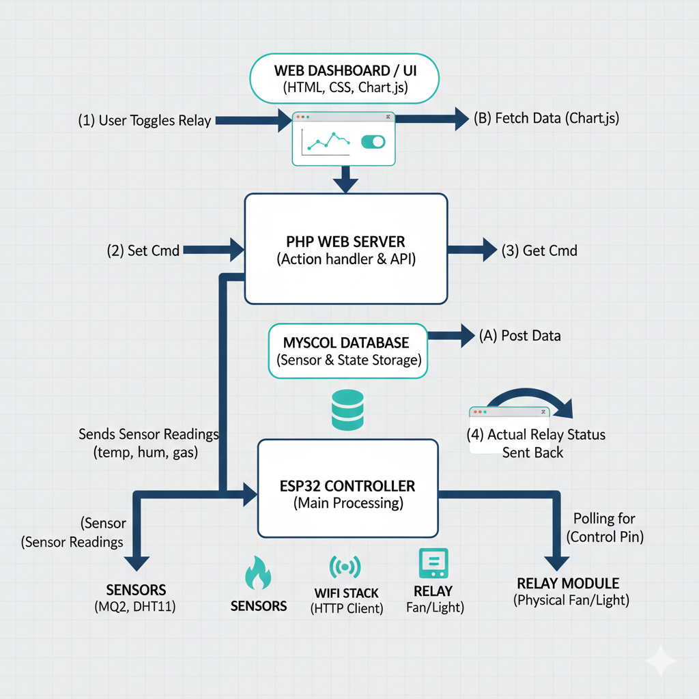
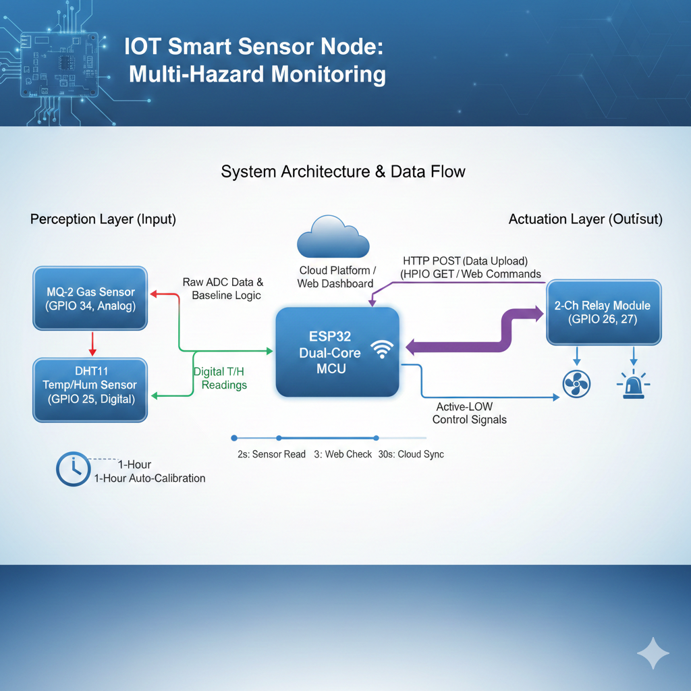

Problem Statement
It is hard to keep track of home safety, like temperature levels or gas leaks, when you are not there. Most systems only show numbers on a small screen in the room. Also, if there is a dangerous situation (like a gas leak), you usually cannot do anything to fix it unless you are physically at home to flip a switch.
Solution Statement
I built a system using an ESP32 that constantly monitors sensors. It sends this data to a MySQL database using PHP so it can be shown on a graph on a website. This allows you to see safety levels from anywhere and use a "Remote Switch" to turn on safety devices (like a fan) using your phone or laptop.
SYSTEM HARDWARE OVERVIEW

Project Objectives
To monitor temperature and gas levels in real-time from any location.
To turn raw data into a visual graph that is easy to understand.
To allow remote control of appliances through a web dashboard.
To create an automatic safety system that works even without the internet.
SOFTWARE BLOCK DIAGRAM

How it Fixes the Problem
This project uses two layers of safety:
Local Control (If-Else): The ESP32 runs an "if-else" statement directly on the chip. For example: if the gas level is too high, then it turns on the exhaust fan immediately. This works locally even if the internet is down.
Remote Control: At the same time, the user can see the gas levels on a website graph. If they want to take extra action, they can click a button on the website. This sends a command through PHP to the ESP32 to trigger the relay manually.
Why I am making this project (What I want to study)
I am making this project to learn:
Logic & Programming: How to use if-else statements to make a machine "think" and react to its environment.
Data Visualization: How to take numbers from a sensor and turn them into a moving graph on a webpage.
Backend Systems: How PHP acts as a bridge and MySQL acts as a memory for all the sensor data.
Web Design: How to use HTML and CSS to build a simple control panel that anyone can use to keep their home safe.